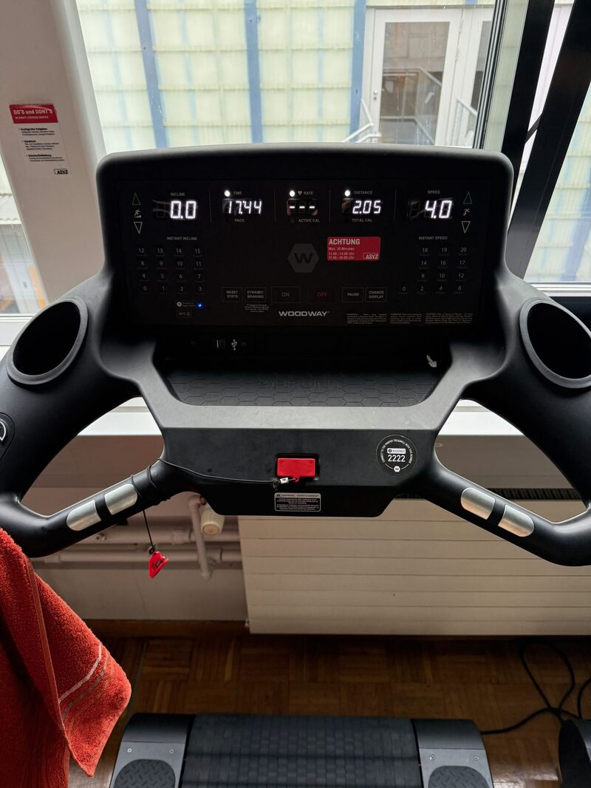
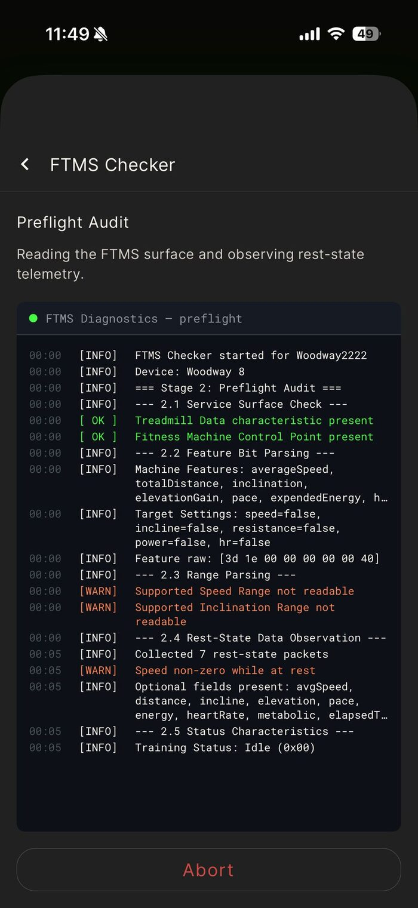

To keep fit, both mentally and physically, since high school I have been doing (more or less regularly) long-distance running. I have not run a marathon yet, but for me doing regular (3-4x per week) 1h runs is even more important. Following the famous Greek maxim katametron (with measure), I keep it simple, steady and not too extreme.
Now with colder weather approaching, it's of course still possible to run outside, but I also like doing runs on the treadmill. And Woodway is one of the best. I use Strava to keep my logs, and I did not know whether it's possible to connect it to the Woodway. The console supports ANT+, but Strava and the iPhone I am using do not.

And it was a nice exploratory / learning project. It turns out the Woodway console also speaks FTMS (Fitness Machine Service), a standard Bluetooth Low Energy profile that fitness machines use to broadcast workout data — speed, incline, distance, elapsed time — and to accept control commands. The NFC tag on the console is just a shortcut to identify which treadmill to connect to; the actual data stream then runs over Bluetooth. I am using kinni (a phone app) to read that FTMS stream and monitor speed and duration, and the first test shows it working nicely. I will try to import the run into Strava next time I am at the gym.

Doesn't it look almost like a Linux bootup sequence? :-)